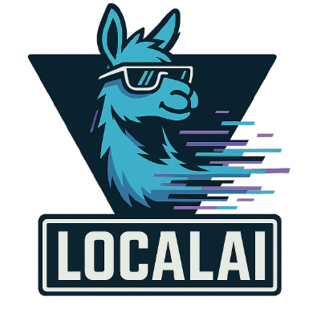

SOURCE PHOTO
Your photograph and projected skeleton will appear here.
3D RECONSTRUCTION
Estimate a body to explore it in 3D.
● Native GGML ● Original PyTorch

Your photograph and projected skeleton will appear here.
Estimate a body to explore it in 3D.